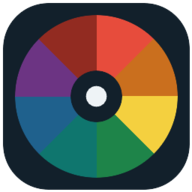

Trascina per ruotare · rotella/pinch per zoom · tocca un punto per i dettagli
Trascina per ruotare · rotella/pinch per zoom · tocca un punto per i dettagli
Nessun meridiano trovato.

Aggiungi Kinesiology alla schermata Home per aprirla come un'app e consultarla anche offline.